|
Roda JC - AZ (0-0) 6 april 2002 |
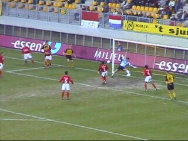
Een zanderige grasmat, een schrale westenwind
en een zeer matige wedstrijd waarin Moens van
AZ zijn club enkele malen zoals hier redde.
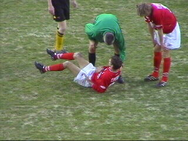
Luinge floot de wedstrijd helemaal kapot en deed
dat voornamelijk in het nadeel van Roda.
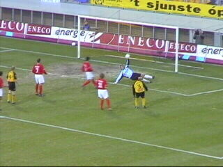
Moens pareert een schot van Vrede.
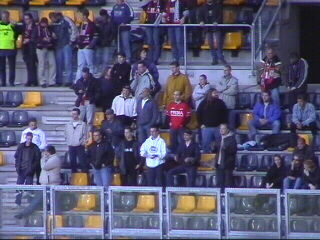
Weinig AZ-supporters.
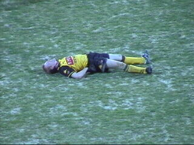
Lachambre sur la terre.
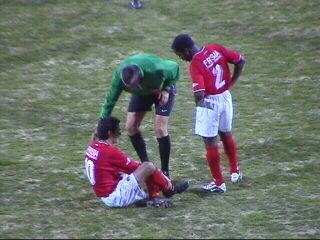
Luinge ontfermt zich over Perez.
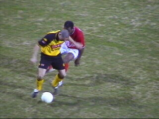
Skinny Soetaers won nog wel eens een duel maar
kon daar zelden een goed vervolg aan geven.
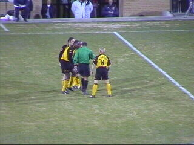
Vicelich krijgt rood. Luinge gebaart hier het
vergrijp: "natrappen".
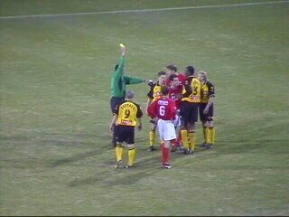
Na Vandenbroeck en Vicelich is er nu een kaart
voor Van der Luer.
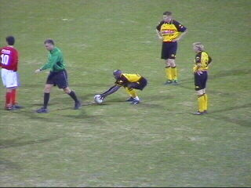
He he, Tchoutang smokkelt een meter.
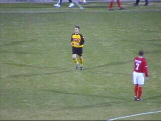
Diego Jongen die ook nog even mocht invallen
bleek duidelijk te licht voor de A-selectie.
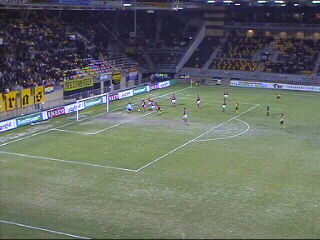
Droomkans vlak voor tijd. Maar ja...Moens he!
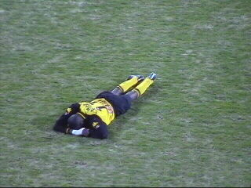
Lawal met ingepakte pols in de graswoestijn.
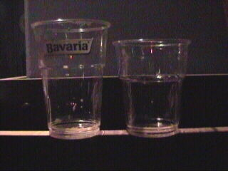
De wedstrijd eindige onbeslist maar het duel tussen
het pintje omloop en het pintje Kick Off werd met
20 cc verschil gewonnen door het pintje omloop.
Doe uw voordeel !!!
©KPD